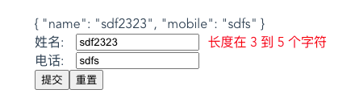

vue element表单组件简单实现
这篇文章发布于 2020/08/22，归类于 Vue
标签：
element form实现，element 表单模拟实现，element form模拟实现
在写表单时，一般我们会用到el-form相关组件，那它内部是怎么实现的呢？下面我们来写个demo，尝试实现下。

测试组件demo
先来写一个调用示例，把el-前缀换成z-，然后我们需要实现z-form, z-form-item, z-input组件
<template>
<!-- /elementForm -->
<div>
<z-form ref="ruleForm" v-model="form" :rules="rules">
{{ form }}
<z-form-item label="姓名" prop="name">
<z-input v-model="form.name" placeholder="请输入姓名"></z-input>
</z-form-item>
<z-form-item label="电话" prop="mobile">
<z-input v-model="form.mobile" placeholder="请输入电话"></z-input>
</z-form-item>
<button @click="submitForm('ruleForm')">提交</button>
<button @click="resetForm('ruleForm')">重置</button>
</z-form>
</div>
</template>
<script>
export default {
components: {
ZInput: () => import("./ZInput"),
ZFormItem: () => import("./ZFormItem"),
ZForm: () => import("./ZForm")
},
data() {
return {
form: {
name: "",
mobile: ""
},
rules: {
name: [
{ required: true, message: "请输入姓名", trigger: "blur" },
{ min: 3, max: 5, message: "长度在 3 到 5 个字符", trigger: "blur" }
],
mobile: [{ required: true, message: "请输入电话", trigger: "change" }]
}
};
},
methods: {
submitForm(formName) {
this.$refs[formName].validate(valid => {
console.log("valid", valid);
if (valid) {
alert("submit!");
} else {
console.log("error submit!!");
}
});
},
resetForm(formName) {
this.$refs[formName].resetFields();
}
}
};
</script>表单组件的封装
z-form, z-form-item, z-input
ZInput.vue
- 双向绑定:@input、:value 派发校验事件
- 派发校验事件
<template>
<div>
<!--
1. <z-input v-model="searchForm.name"></z-input> 等价于
<z-input :value="searchForm.name" @input="searchForm.name = $event"></z-input>
虽然等价，区别是什么呢？v-model在输入法组合过程中不会更新值，而@input这种是会更新的，详情参见之前的笔记
2. v-bind="$attrs" 接收z-input上的除props接收外设置的其它属性，比如placeholder等
-->
<input :value="value" @input="oninput" v-bind="$attrs" />
</div>
</template>
<script>
export default {
props: {
value: {
type: String,
required: true
}
},
methods: {
oninput(e) {
this.$emit("input", e.target.value); // 双向绑定
this.$parent.$emit("validate"); // 触发父组件的校验
}
}
};
</script>ZFormItem.vue
- 给Input预留插槽
- slot 能够展示label和校验信息
- 能够进行校验
<template>
<div class="z-form-item">
<div class="label">{{ label }}:</div>
<div class="input"><slot></slot></div>
<div class="error" v-if="errMsg">{{ errMsg }}</div>
</div>
</template>
<script>
import Schema from "async-validator";
export default {
inject: ["form"], // 从祖先组件接收searchForm传参
props: {
label: {
// 对应的标签名
type: String,
required: true,
default: ""
},
prop: {
// 对应的字段名
type: String
}
},
data() {
return {
errMsg: "" // 错误信息
};
},
mounted() {
// 当前组件监听validate事件，子组件通过$parent.$emit触发
this.$on("validate", () => {
this.validate();
});
},
methods: {
// 返回promise, 注意 asyc-validator的版本，需要是新的
validate() {
let value = this.form.model[this.prop];
let rules = this.form.rules[this.prop];
console.log(this.prop, value, rules);
let desc = { [this.prop]: rules };
let schema = new Schema(desc);
return schema.validate({ [this.prop]: value }, errors => {
if (errors) {
this.errMsg = errors[0].message;
} else {
console.log("验证成功");
this.errMsg = "";
}
});
},
// rules: {
// name: [
// { required: true, message: "请输入姓名", trigger: "blur" },
// { min: 3, max: 5, message: "长度在 3 到 5 个字符", trigger: "blur" }
// ],
// mobile: [{ required: true, message: "请输入电话", trigger: "change" }]
// }
resetFields() {
this.form.model[this.prop] = ""; // 重置值
this.errMsg = ""; // 重置错误消息
}
}
};
</script>ZForm.vue
- 给FormItem留插槽
- 设置数据和校验规则
- 全局校验
<template>
<!-- el-form 模拟-->
<div>
<slot></slot>
</div>
</template>
<script>
export default {
// 将z-form元素上的model以及rules属性的值传递到z-form-item，用于校验，显示错误信息
provide() {
return {
form: {
model: this.value,
rules: this.rules
}
};
},
props: {
value: {
type: Object
},
rules: {
type: Object
}
},
methods: {
// submit时的校验
async validate(cb) {
// this.$children 所有form-item vue实例 获取实例的this.prop属性，有值则校验
let tasks = this.$children
.filter(item => item.prop)
.map(item => item.validate());
console.log("tasks", tasks);
// 执行他们的校验方法，如果大家的Promise全部都resolve，校验通过
// 如果其中有reject，catch()中可以处理错误提示信息
try {
await Promise.all(tasks);
cb(true);
} catch (e) {
cb(false);
}
},
resetFields() {
// form，这样做可能只是清空了值，但没有清楚form-item的错误提示信息
// Object.keys(this.value).forEach(key => {
// this.value[key] = "";
// });
this.$children
.filter(item => item.prop)
.forEach(item => item.resetFields());
}
}
};
</script>与element el-form源码的区别
这里的实现和element-ui的实现有什么区别呢？可以参考element源码，我这里简单说几个区别
- element使用的表单校验 async-validator是 1.x.x 版本，而上面的示例需要使用的版本 3.x.x版本
- Form组件里provide，上面只为form绑定了rules和props，element中指定绑定了当前this
- 事件的监听和触发，这里使用的是$parent来处理，element里面通过 this.dispatch事件来触发
- element form支持很多参数，这里只是简单的模拟，element里面会复杂很多。
完整demo参见 element form实现 - fedemo | github